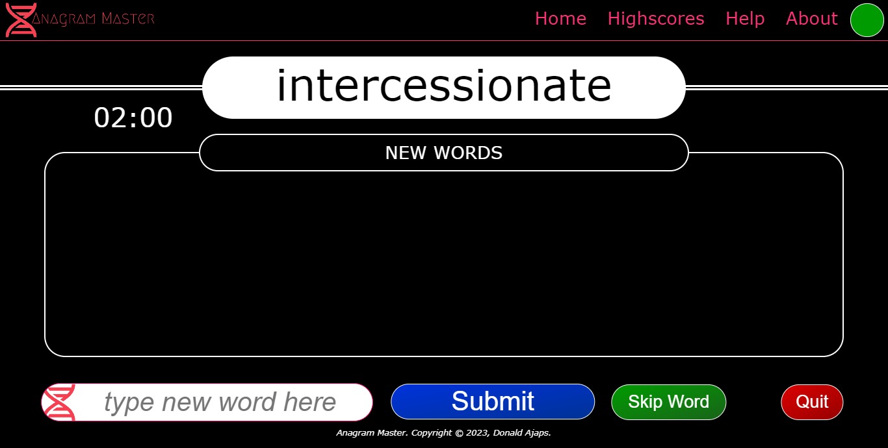
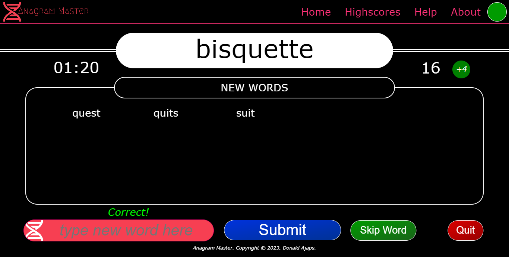
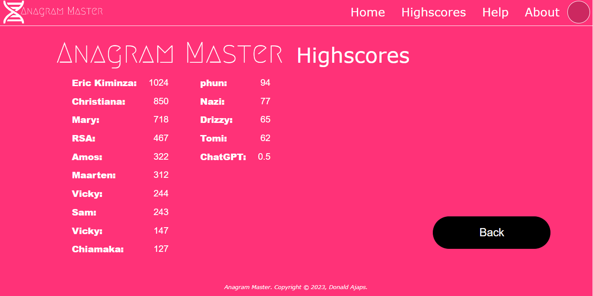
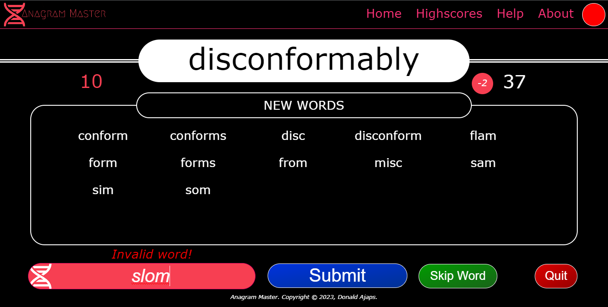
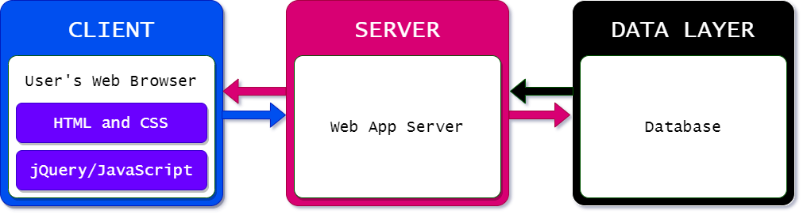
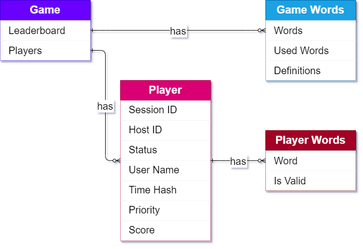

|
 |
An addictive and engaging word game where players have fun rearranging the letters from a root word to form new words. Play Anagram Master |
Features
The key features of the game include:
Scoring System

The game assigns points for words created by the player. Invalid words are penalised, while valid words are rewarded. Points given for valid words are a factor of the number of letters used from the root word they are formed from. Special bonuses are given for using all the letters in the root word, and for forming twenty words within the time limit of a game round. All of these add up to form the player's total score.
High Scores/Leaderboards

Anagram Master has a high scores page that displays a leaderboard. At the end of a game session, a player's score is added to the list if it is greater than the lowest score on the list. Scores displayed are the twenty highest scores to date, sorted in descending order. This acts as a rewards system for players, and it fosters competition among them.
Rounds, Timing and Limits

A game session is broken down into units called rounds. A game round consists of two minutes in which a player has the chance to form up to twenty anagrams for a single root word (called the round word). Once that time elapses, the clock resets and a new root word is given to the player to signify the start of a new round. However, if the player is able to create twenty valid anagrams before the time runs out, they are rewarded with a bonus, and taken to the next round. These limits, bonuses and the penalties for invalid words create a sense of urgency and engagement that excites the player, making the game more fun.
About the Project
Anagram Master was conceived as the portfolio project for completing the Foundations stage of the ALX Software Engineering Course. Created by Donald Ajaps in September 2023, it was built as a digital reimagining of a classic word game. A game he played a lot with friends over the years with pen and paper. Playing Anagram Master should be nostalgic for those who love that classic game and would like to play it again digitally, with the added advantages that digital systems offer.
Though there are similarities, it is not designed to serve as an alternative to Scrabble, or as some kind of word solver for any word game. English (en-GB and en-US) is the only supported language, but future versions could be multilingual.

